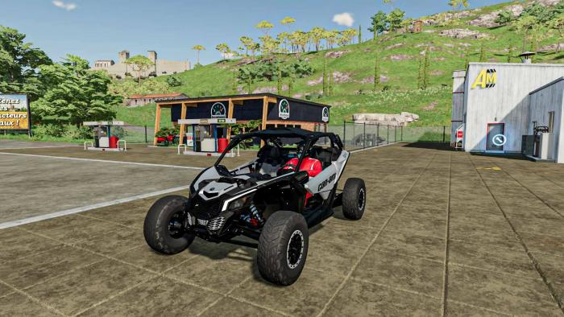
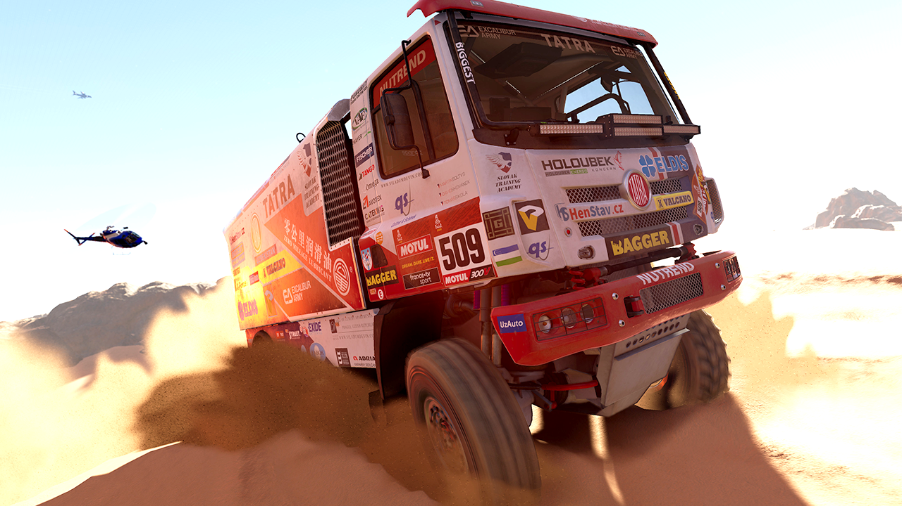

First and foremost, brand exposure lies at the heart of this strategic move. By immersing ourselves in the world of video games, we can connect with a younger audience and introduce them to the thrilling Can-Am brand from an early age. This exposure lays the foundation for building lasting brand loyalty and establishes a strong connection that may translate into future...